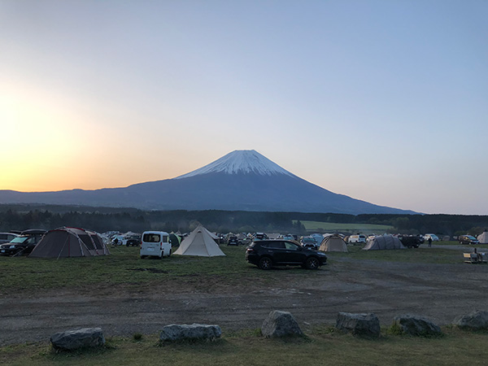

キャンプ行ってますかー？
キャンプの準備をちょっと便利にしてくれるかもしれないアプリを作ってみましたよ。
こんなことができます（できたらいいな）
-
キャンプ場情報表示
行く予定のキャンプ場の天気予報・地図・周辺情報を表示します。
-
TODOリスト作成
買い物リストやキャンセルポリシー、備忘録などに。
-
持ち物チェックリスト作成
独自の持ち物リストを作成できます。キャンプ用品のカテゴリ分けで見やすく！
-
お役立ちリンク集を作れる
ギアのマニュアルや近隣施設などの自分用のブックマークに。
-
写真アップ（予定）
キャンプに行ったら写真をアップ。トップページでみんなにシェア。
-
キャンプごはんメモ（予定）
キャンプごはんメニュー計画のメモに。
CAMP SNAP!
キャンプマニアの写真たちカレー20人分
Recamp勝浦2020/11/03
username
カレー20人分
Recamp勝浦2020/11/03
username
カレー20人分
Recamp勝浦2020/11/03
username
こんにちは、ユーザーさん
ログアウト
こんにちは、ユーザーさん
持ち物リストの編集
写真投稿
NEXT CAMP PLAN

ふもとっぱら
2021/5/3-5/5
Recamp勝浦
2021/5/3-5/5
ビッグランド
2021/5/3-5/5
こんにちは、ユーザーさん
ログアウト
- 行程を編集
- 持ち物リストの編集
- このシオリを削除
- シオリ一覧ページへ戻る